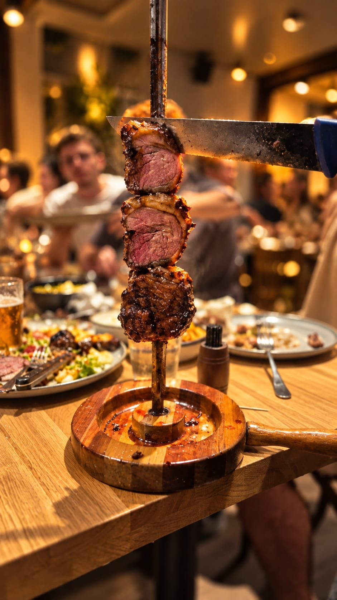

מסעדות בשבת באילת - הכי טעים שיש!

אם תצאו החוצה בשבתות ותסתובבו באילת, תגלו כמה מסעדות באילת ששוות ביקור וחוויה כמו מסעדה ברזילאית, המעניקה חוויה ייחודית ויוצאת דופן של תפריט ברזילאי מקורי, יחד עם כל האווירה המתלווה למטבח הזה.
בכל העולם ידוע כי בדרום אמריקה בארצות כמו ברזיל וארגנטינה, אוכלים הרבה מאוד בשר. כל מטבח של מדינה, מורכב ומושפע בדרך כלל מההיסטוריה של האזור, וזו יצרה את המטבח המסוים. בכל מדינה שאנו מכירים היום, עברו כל מיני אימפריות ועמים והשאירו את חותמם גם על המטבח, על מנות שאוכלים עד היום ויצרו חלק מההתפתחות שלו.
במאה השש עשרה הגיעו לדרום אמריקה מהגרים מאירופה שהיה להם ניסיון בגידול בקר. כיוון שזה היה הניסיון שלהם, אז זה מה שהם עשו, הם החלו לגדל עדרי בקר בחוות בערבות הפאמפאס. כיוון שהם נזקקו לידיים עובדות, הם שכרו עובדים מקומיים מה שאנו מכירים היום בתור "גאוצ'וס". אותם גאוצ'וס היו גברים קשוחים שיצאו לרעות עם העדרים לפעמים במשך שבועות בשטח, ולא חזרו לבתיהם. הם נאלצו לאכול והדבר שהכי טבעי היה להם לאכול היה בשר בקר.
בין מסעדות בשבת באילת יש מגוון מסעדות מומלצות באילת ביניהן מסעדה ברזילאית עם אסאדו חלומי.
ברזיל ובשר זה קרנבל
בעקבות חדירת בשר הבקר לתרבות האוכל בברזיל, עד היום מסעדות ברזילאיות מגישות את הבשר המובחר ביותר בעולם וברזיל היא יצואנית בשר ידועה. קרניבורים ישראלים יודעים שיש מסעדות בשבת באילת, שלפחות לאחת מהן רצוי מאוד להיכנס כי היא מוכרת את הבשר הכי טעים באילת. מדובר על מסעדה ברזילאית שמעניקה לכל אורח את החוויה הברזילאית של שפע הבשר, על רקע מוזיקת הסמבה. הכל מאוד חושני, בשרי, עשיר בטעם וחוגג את החיים. מאוד מתאים לערוך במסעדה כזו מפגש חברים סביב שיפוד ענק של בשרים, מסיבת יום הולדת ועבור קרניבורים לא צריך סיבה מיוחדת במינה, האילתים תמיד שם.
אחת המנות הכי שוות עבור כל קרניבור הוא האסאדו. זהו נתח שצריך לדעת לחתוך אותו והוא דורש אומנות של ממש. הגאוצ'וס היו מניחים אותו על האש החשופה של המדורה בשטח, היום נוהגים לצלות אותו ממש על האש, כדי שייצלה וייחרך כמו שצריך מכל הצדדים כמו שכל גאוצו'ס אמתי אוהב.
מה זה פסאדורים?
תרבות צליית הבשר בברזיל, הגיעה גם למסעדה ברזילאית אחת משורת מסעדות בשבת באילת שאפשר ללכת אליה עם כל המשפחה ולהתארח על שיפוד ענק של בשרים על האש, בטעם של קרנבל ברזילאי.
ליד שיפוד ענק של נתחי בשר תמצאו את הפסאדורים אשר אחראיים על השחלת נתחי הבשר וגם החיתוך שלו, הדורש אומנות מיוחדת במינה.
האסאדו הוא דרך אכילת הבשר שהיא הכי פופולרית היום בכל מסעדה ברזילאית אותנטית, והיא ידועה ואהובה בכל העולם. עושים את זה אולי קצת אחרת בארצות הברית אבל כעיקרון מדובר בהחלט באותו גברת בשינוי אדרת.
מי בא לחגיגה של בשר על האש?
הגאוצ'וס היו מניחים את נתחי הבשר שלהם על האש החשופה של המדורות, במסעדות הברזילאיות צולים אותם בתוך כלים שמדמים צלייה של מדורה. חשוב מאוד שהנתח ייצלה לאט ומכל הצדדים, ויש הקפדה יתרה על רמת הצלייה כדי להביא את הנתח למידת הצלייה הכי מדויקת. בזכות הידע של ההכנה אפשר להעניק לכל נתח גם לא המובחר ביותר את הטעם המיוחד של האסאדו.
מדובר בלא פחות מהרפתקה קולינרית ששווה להגיע אליה כאשר יש מסעדות בשבת באילת שמציעות את המטבח הברזילאי על כל החוויה האותנטית והמקורית שלו.